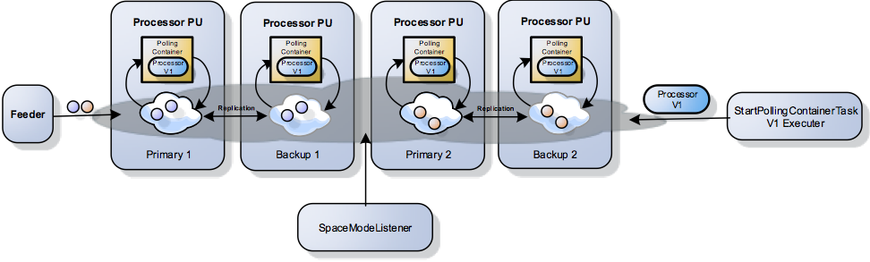
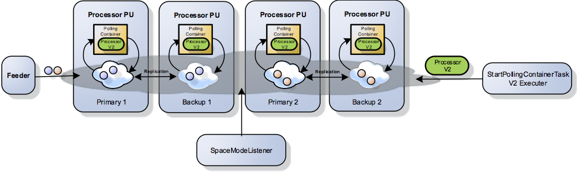

Data processing in real-time micro services oriented systems may handle unstructured data , data that may be feed by very disparate systems. Data may be sent from IoT,FiS,Life science,media,Telco, Logistics and other mission critical systems. Such data may be sent into an edge or a central system running on the cloud or a private data center for processing.
This incoming data may need to go through complex flow of validation, formatting, transformation, enrichment, aggregation etc. before it can be used by the backend system. Quick access to this data with minimal serialization and network utilization is essential to the system scalability,availability, reliability,optimized; effective resource utilization and overall system agility.
The best approach to achieve such system behavior is to consume and process the data exactly where it is hitting its data store fabric. This means there is no need to move the incoming data into another process where the actual processing logic is executed. This approach is critical when handling vast amount of incoming data that need to be analyzed to produce real-time decisions.
The challenging part with this approach is updating the processing logic without any downtime. Due-to the dynamic nature of the incoming data, you may need to update the processing logic. As the processing logic running within the same process and classloader as the data you may need to build a new PU of your statefull PU that package the most recent code of your processing logic (polling container , notify container…), undeploy the existing PU and deploy the new version. This would need the entire data to be loaded from some external data source or from the space native persistence storage. Another option would be to use the Hot deploy approach which delivers zero downtime , but still requires bouncing all space cluster partitions which require data reload from primary to backup partitions that may take some time, CPU and network resources.
The Dynamic Processing approach illustrated here allows you to push processing logic into your live data fabric space without any predefined configuration, without the need to stop the system when new processing code is available (new release, patch, upgrade) - while the processing code is collocated with its associated incoming data. This simplifies the system deployment since there is no need to package the processing code together with the data store (Space PU). You may push new updates of your processing logic anytime. New versions of the processing logic will replace the existing one, continuing the processing activity without any disruption.
The Dynamic Processing using the SupportCodeChange Annotation allows you to update Task , Custom Change and Custom Aggregator implementations without any downtime. With the code example below we have the DynamicTask V1 implementation that return the value “A”:
import org.openspaces.core.executor.Task;
import com.gigaspaces.annotation.SupportCodeChange;
@SupportCodeChange(id="1")
public class DynamicTask implements Task<String> {
@Override
public String execute() throws Exception {
return new "A";
}
}
Version 2 of the same DynamicTask class returns the value “B”:
import org.openspaces.core.executor.Task;
import com.gigaspaces.annotation.SupportCodeChange;
@SupportCodeChange(id="2")
public class DynamicTask implements Task<String> {
@Override
public String execute() throws Exception {
return new "B";
}
}
With our example below we have:

Once a new version of the processor is available (V2), you may call the Task Executor again with a new version ID of the StartPollingContainerTask (V2). This will replace the existing PollingContainer that is using V1 Processor with V2.

The example includes:
<id ="eventContainerList" class ="java.util.ArrayList" scope="singleton" />
This demo will illustrate how collocated polling containers can be swapped without any downtime. It is using the @SupportCodeChange functionality available with 12.1.
Download the example:
Client Applications
Space PU
Basic running instructions: